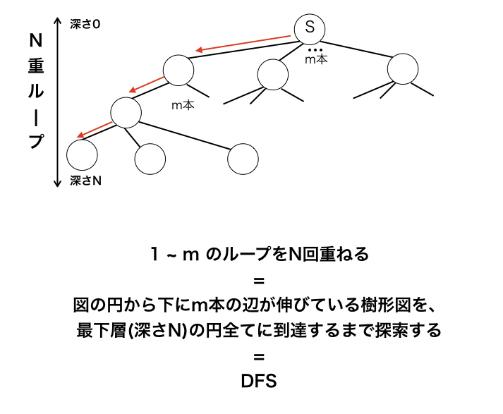

全探索は全てを調べることです。brute force とも言います。
再帰関数によって実装できます。全ての葉の深さが \(n\) である木を想像するとわかりやすいです。
深さが \(d\) が持つ子の個数は、\(n\) 重ループで \(d\) 番目にネストされた for 文の範囲です。

\(n\) 個の対象に true か false が割り振られた状態を全探索します。
true である要素を ビットマスク すると、割り振りの状態は、\(0\) 以上 \(2^{n-1}\) 以下の整数を \(2\) 進数表示した際のビットの状態と対応しています。
例えば \(11\) を \(2\) 進数表示すると \(1011)\) であり、下の桁から \(0,1,3\) が true の状態と対応します。